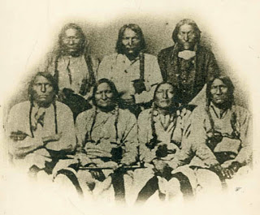
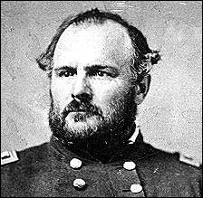

“What you are proposing is murder,” Lt. Joseph Cramer told his
commanding officer, Colonel John Chivington of the Third Colorado Cavalry,
shortly before daybreak on the morning of the planned assault. Cramer and
several other members of Chivington’s command staff had severe misgivings about
the prospect of a sneak attack against a band of defenseless of Cheyenne
Indians who had been promised protection.
Chief Black Kettle had distinguished himself through
repeated efforts to secure the peace – on one occasion riding weaponless
between opposing skirmish lines to prevent a battle from breaking out. In
witness of his non-belligerency he had been provided with a United States flag
by military officers who promised to protect the Cheyennes and Arapahos who
lived in his encampment.
The "Battle" of Sand Creek could be considered the last engagement in which the U.S. flag flew over Americans who mounted a desperate defense of their homes and families against a barbarous aggressor.
During the months leading up to the November 1864 attack on
the Sand Creek Reservation, Black Kettle had cooperated in efforts to identify
and apprehend Indians who had stolen horses and attacked white settlers. He had
also repeatedly petitioned both civilian and military officials on behalf of
Indians who had suffered similar abuses.
 |
| Black Kettle is in the front row, second from the left. |

“The Indians talk very bitterly about the whites – say they
have stolen their ponies and abused their women, taken their hunting grounds,
and they expected that they would have to fight for their rights,” wrote Lt.
George Hawkins in an official report filed during the bitter winter of 1863.
The concept that Indians had rights they were entitled to defend was foreign to
Colorado Governor John Evans and General Samuel Curtis.
During a September 1864 conference in Denver, Evans
disingenuously insisted that owing to a “state of war” the military had plenary
authority over Indian affairs, and that he was powerless to negotiate a peace
treaty. Curtis wasn’t interested in a modus
vivendi with the Indians: “I want no peace until the Indians suffer more,”
he wrote in a directive to Colonel Chivington. “Pursue everywhere and chastise
the Cheyennes and the Arapahos…. No presents must be made and no peace
concluded without my consent.”
Chivington was indecently eager to carry out that barbarous
directive. Considered a war hero of sorts following a Civil War engagement with
Confederate forces in New Mexico, Chivington chafed under the restraints placed
on his volunteers. He also resented the fact that the Third Colorado
Cavalry, which had yet to see action, had been saddled with the sardonic
sobriquet “The Bloodless Third.”
 |
| Chivington. |

Chivington’s zeal for combat was highly selective, however.
In staging his punitive expedition he was careful to avoid contact with any
group of Indians who were actually capable of fighting back.
With Black Kettle’s people still mired in slumber, and
dawn’s tentative fingers peeling away the blanket of darkness, Chivington
dismissed the complaints of his underlings as an offense to his exquisitely
refined sense of honor: “I believe it right and honorable to use any means
under God’s heaven to kill Indians who kill and torture women and children.
Damn any man who is in sympathy with them.”
Chivington gave the order, and 750 troops opened fire on the
undefended village. The pitiless rifle onslaught was intermittently punctuated
by the throaty report of four twelve-pound howitzers.
Emboldened by the sight of an unarmed and helpless opponent,
Chivington’s troops swarmed the camp and surrendered themselves unconditionally
to their most depraved impulses.
“There are gruesome eyewitness accounts about braining live
children, cutting off fingers to get rings, cutting off ears to get silver
earrings, and multi-scalping the same corpse,” recalled historian J. Jay Myers
in his book Red Chiefs and White Challengers. A volunteer named Robert Grant later testified that he saw one
dead Indian mother “cut open with an unborn child lying by her side. I saw the
body of [a Cheyenne named] White Antelope with the privates cut off.”
| It wasn't a "battle" in any sense. |

More than 150 Cheyennes – most of them women and children – were
slaughtered at Sand Creek. Black Kettle, his gravely wounded wife Medicine
Woman, and the other Cheyennes and Arapahos who survived were forced to sign
another useless treaty and relocate to an even more desolate reservation on the
shores of the Washita River in Oklahoma.
Nearly four years to the day after
Chivington’s murderous raid, Black Kettle’s band endured another unprovoked massacre,
this one carried out by George Armstrong Custer's Seventh Cavalry at Washita. Black Kettle and his wife were gunned down while carrying a flag of truce.
In his book Blood and Thunder: An Epic of the American
West, Hampton Sides points out that the Sand Creek Massacre,
which became the U.S. military’s template for murderous “pacification”
operations against the Indians, “is now widely regarded as the worst atrocity
committed in all the Indian wars.” At the time, it was celebrated as a brave
and noble deed.
“Chivington returned to Denver in triumph,” writes Sides. “At a theater his men paraded their war trophies before the cheering crowds: Scalps, fingers, tobacco pouches made from scrotums, purses of stretched pudenda hacked from Cheyenne women. The Denver newspapers praised the Colorado Volunteers for their glorious victory.”
“Chivington returned to Denver in triumph,” writes Sides. “At a theater his men paraded their war trophies before the cheering crowds: Scalps, fingers, tobacco pouches made from scrotums, purses of stretched pudenda hacked from Cheyenne women. The Denver newspapers praised the Colorado Volunteers for their glorious victory.”
“Posterity will speak of me as the great Indian fighter,”
boasted Chivington. “I have eclipsed Kit Carson.”
Of course, Kit Carson – unlike Chivington – didn’t
specialize in sneak attacks on unarmed Indians to whom official protection had
been promised.
A few days before Chivington's “victory” over defenseless Cheyenne women and children, Carson had fought a real battle against a huge force of Comanches and Kiowa on the plains of Texas. Out-numbered ten-to-one and facing other strategic disadvantages, Carson managed to eke out a nominal “victory” in the Battle of Adobe Walls.
A few days before Chivington's “victory” over defenseless Cheyenne women and children, Carson had fought a real battle against a huge force of Comanches and Kiowa on the plains of Texas. Out-numbered ten-to-one and facing other strategic disadvantages, Carson managed to eke out a nominal “victory” in the Battle of Adobe Walls.
“Just to think of that dog Chivington and his dirty hounds,
up at Sand Creek,” Carson commented contemptuously to Army Inspector Col. James
Rusling after returning from battle. “His men shot down squaws, and blew the
brains out of little innocent children. You call such soldiers Christians...?
And Indians savages? What do you suppose our Heavenly Father, who made both
them and us, thinks of these things? I tell you what, I don't like a hostile
Redskin any more than you do. And when they are hostile, I've fought 'em, hard
as any man. But I never yet drew bead on a squaw or a papoose, and I despise
the man who would. I've seen as much of 'em as any man livin', and I can't help
but pity 'em, right or wrong. They once owned this country.... But now they own
next door to nothing, and will soon be gone.”
Carson spent a brief term as commissioner of the Bosque
Redondo Navajo Reservation in New Mexico, a project he understandably
came to view with unalloyed disgust. The reservation’s creator, General James
Henry Carleton, regarded that reservation to be a model experiment in the forcible assimilation of Indian
populations.
Uprooted by the army from their homeland -- “severity will
be the most humane course,” Carleton insisted – the Navajo were forced to
endure what they call the “Long Walk” to Bosque Redondo.
As the defeated Navajos were enduring their murderous trek
to the Bosque Redondo gulag, Carleton wrote what he thought was a gallant and
generous epitaph for that people:
“The exodus of this whole people from the land of their fathers is a touching sight. They have fought us gallantly for years on years; they have defended their mountains and their stupendous canyons with heroism, but at length, they found it was their destiny, too, to give way to the insatiable progress of our race.”
“The exodus of this whole people from the land of their fathers is a touching sight. They have fought us gallantly for years on years; they have defended their mountains and their stupendous canyons with heroism, but at length, they found it was their destiny, too, to give way to the insatiable progress of our race.”
The land
in the new Navajo “home” was desolate, its water supply brackish and unfit for
either consumption or cultivation. Promised supplies and farm implements
arrived sporadically, if at all. Many of the Navajo, provided with bags of
white flour for which they had no practical use, died of malnutrition from eating
uncooked handfuls of the unfamiliar dust contained therein.

Washington’s interest in the Navajo ended once they were
cattle-penned at Bosque Redondo. Rather than seeing to the welfare of their new
wards, the Feds focused on Carleton’s fanciful claim that the stolen Navajo
lands abounded in gold.
Carleton had told Washington that the “only peace” that could be made with the Navajo “must rest on the basis that they move onto the lands at Bosque Redondo.... Either subjugation or destruction ... are the alternatives.” He frequently wrote of the need to “chastise” and “overawe” the Navajo, to let them “feel the power and the sting of the government.” He nearly chastised them into oblivion.
Carleton had told Washington that the “only peace” that could be made with the Navajo “must rest on the basis that they move onto the lands at Bosque Redondo.... Either subjugation or destruction ... are the alternatives.” He frequently wrote of the need to “chastise” and “overawe” the Navajo, to let them “feel the power and the sting of the government.” He nearly chastised them into oblivion.
Hundreds of Navajo were felled by starvation after a cutworm
infestation struck their cornfields. The entire Navajo population would likely
have died at Bosque Redondo if they hadn’t been given grudging permission to
leave in 1868 after signing yet another treaty surrendering ninety percent of their original lands.
The quaint notion expressed by a few throwbacks like Kit Carson that Indians should be dealt with as human beings created in God's image was widely regarded as a relic of a less “progressive” era. Indeed, by the late 19th Century, the term “progressive” was used to describe Indians willing to undergo federally mandated reconstruction; “conservatives” were those who stubbornly clung to their rights.
Following Washington’s conquest of the independent South, the Regime turned its eyes westward. General William Sherman, whose infernal columns had carved a bloody highway to the sea, was given the task of clearing the path for the corporatist railroad combine – which meant either subjugating, expelling, or liquidating the Plains Indians.
| Red Cloud. |

A little more than two years after Chivington’s slaughter at
Sand Creek, a vainglorious boob named Lt. Col. W.J. Fetterman, commanding a detachment
of eighty men tasked to guard a supply train, abandoned his assignment to stage
a punitive expedition of his own. He led his men straight into a fatal ambush
laid by Red Cloud and American Horse.
When U.S. troops butchered Indian women and children, the
event was called a “battle”; when they were killed by Indians defending their
own territory, the incident was described as a “massacre.” (Contemporary
defeats of that variety are referred to as “terrorist attacks.”) Rather than
treating Fetterman’s death and the annihilation of his command in Wyoming as the product
of insubordination and lethal ineptitude, Sherman turned Fetterman into a
martyr.
“This massacre should be treated as an act of war and should
be punished with vindictive eagerness, until at least ten Indians are killed
for each white life lost,” Sherman instructed those under his command. This
didn’t mean waging war against the battle-hardened Indian warriors who had defeated
Fetterman in a fair fight, of course. Notes historian Heather Cox Richardson in
her recent book Wounded Knee,
“Sherman told the commander of the Department of the Platte to consider all
Sioux in the Power River region hostile.” The object was to “punish them to the
extent of utter extermination if possible.”
Sherman had often heard the grim but irresistible summons to
slaughter. In a letter to his wife Ellen written during the War Between the
States, Sherman noted the “the problem of war consists in the awful fact that the present class of men who
rule the South must be killed outright rather than in the conquest of
territory.” He expressed nearly identical sentiments toward the Plains Indians in
a letter to his brother John, a Republican Senator from Ohio, declaring that
the Sioux and Cheyenne “must be exterminated, for they cannot and will not
settle down, and our people will force us to it.”
Sherman’s most notable Indian opponents didn’t share his
Total War ethic. After Custer’s Seventh Army was defeated in Battle of Greasy
Grass – known by the losers as the Battle of Little Bighorn – Sitting Bull issued
orders not to pursue and kill off the survivors: “Let them live. They came
against us, and we have killed a few. If we kill them all, they will send a
bigger army against us.”
That army came anyway. Sitting Bull and his band fled to
Canada, where they were initially given refuge. The vengeful Regime in
Washington used its influence to intimidate the Canadians into denying the
refugees a suitable tract of land. Confronting the prospect of mass starvation,
Sitting Bull and his followers returned to the United States in July 1881.
After being illegally imprisoned at Fort Randall, Sitting
Bull was forced to endure a totalitarian homily preached by Republican Senator
John Logan of Illinois.
"You are not a great chief of this country,” Logan lectured. “You have no following, no power, no control, and no right to any control. You are on an Indian reservation merely at the sufferance of the government. You are fed by the government, clothed by the government, your children are educated by the government, and all that you have and are today is because of the government…. The government feeds and clothes and educates your children now, and desires to teach you to become farmers, and to civilize you, and make you as white men.”
"You are not a great chief of this country,” Logan lectured. “You have no following, no power, no control, and no right to any control. You are on an Indian reservation merely at the sufferance of the government. You are fed by the government, clothed by the government, your children are educated by the government, and all that you have and are today is because of the government…. The government feeds and clothes and educates your children now, and desires to teach you to become farmers, and to civilize you, and make you as white men.”
In practice, the policy described by Logan was designed to
kill, through attrition, any Indians who refused to be assimilated. As Charles
Eastman described the process, the government – through corrupt appointees – “robbed
the Indians, then bullied them, and finally in a panic called for troops to
suppress them” if the haggard and starving captive Indians exhibited the
slightest capacity for resistance.
Sitting Bull was murdered by police at the Pine Ridge Indian
Reservation on the morning of December 15, 1890. The unarmed chief was shot in
the chest after refusing to submit to an unlawful arrest. This was an overture
to the climactic slaughter on the frozen shores of Wounded Knee Creek two weeks
later.
To this day, the U.S. Army proudly displays the “battle streamer”
of what is called the Wounded Knee “campaign.” Dozens of
participants in that atrocity – which can properly be called America’s Babi Yar – were
awarded the Congressional Medal of Honor. The monument to the “heroes of Wounded Knee Creek” still exists at Ft.
Riley, Kansas

“By the turn of the [20th] century, Wounded Knee
had become a symbol of the strength of the American government and its
democratic idea,” writes Heather Richardson in Wounded Knee. “The military tactics used at Wounded Knee not only
won Medals of Honor for the soldiers, they also became the face of the modern
American Army. Lieutenant Henry L. Hawthorne, who had directed the artillery
unit until he had been shot in the groin, took his Medal of Honor with him to
MIT, where in 1891 he became a professor of military tactics.”
A decade later, the U.S. Army would apply the lessons it
learned at Wounded Knee in its effort to pacify the Filipinos whom they had “liberated”
from Spanish rule. By some estimates the military relieved roughly two million
Filipinos of their corporeal burdens during its errand of enlightenment in the
archipelago.
| Wounded Knee monument at Ft. Riley. |

In 1883, with the Plains Indians effectively broken, a
retirement-bound William Sherman boasted that his campaign of extermination
against the Indians “did more good for our country and for the human race than
I did in the Civil War.” Since he died and went to hell on Valentine’s Day
1891, roughly a month and a half after the Wounded Knee Massacre, Sherman didn’t
survive to see the uses to which his example would be put by his 20th
Century imitators.
“They were not subjects of fascism who clubbed to death infants in the arms of
Indian mothers,” writes historian John Upton Terrell in his study Land Grab.
“They were not Nazis who shot running Indian children to demonstrate their
prowess as marksmen. It was not a dictatorship which condoned the illegal
appropriation of territory awarded to Indians by solemn treaty for `as long as
the waters run and the sun rises.' It was not ... a fuhrer or a duce
who herded [Indians] into prison camps and let them die of malnutrition, cold
and disease.... The bugle calls of American history proclaim not only noble
victories and morally justified accomplishments. They proclaim, as well, base
deeds and infamous triumphs.”
Terrell’s assessment is worthy of our attention today, as we
are barraged with admonitions that we sing hymns of chastened gratitude to the
memory of those who killed and died on behalf of the State that rules us.
Dum spiro, pugno!
20 comments:
Thank you, William, for this bit of occasion-appropriate history that the mainstream prefers to gloss over. I can think of no better way to spend this day than indulging in reminders of what "those who 'sacrificed'" were really sacrificing for: tyranny, empire, corruption, state-corporatism, and destruction.
By the way, my television will remain in O-F-F mode today. The only channels/programs worth watching will be chock full of war and soldier worship, as has been increasingly the case for the last ten years on every federal holiday that has even a tenuous military connection. Sadly, one cannot even watch one's favorite baseball team play anymore on a summer federal holiday without having warrior worship rubbed in one's nose for a good several minutes stretch.
I second liberranter's comment. It used to be that on those days we were supposed to fly the flag to display our patriotism, I would fly my 'Revolutionary War' flag with the thirteen stars.
Nowadays, I don't even fly that flag unless my Brother, who I live with, insists on us flying the stars and stripes. Today he mentioned it once or twice and then let it drop.
The one flag I do fly, however, is my black and white POW*MIA reminder (to those few who know) that Uncle Sam deliberately left American soldiers in Vietnamese prisoner of war camps to be tortured, worked, and starved to death.
Sorry, folks, but I just can't fly the red, white and blue to honor those brave men (oh, yeah, and we 21st Century people must ALWAYS remember to add "women") who sacrificed their lives to "protect our freedom" by killing foreign people in foreign lands who didn't have even an outside chance of overcoming us and denying us our freedom.
My Dad dropped out of high school to enter the Korean War as a U.S. Navy soldier, but he's in a better place now and I'm sure he understands and approves my reluctance to mindlessly, knee-jerkingly honor our soldiers by flying the Imperialist flag of the U.S. on these holy War Days.
Support the troops by bringing 'em home NOW!
~ D-FensDogg
'Loyal American Underground'
So, so shameful, then and now.
Just look at the newspaper across this country and you'd assume Goebbels was alive and well. Such adulterated worship for the state and it's "enforcers" is sickening. I always have to remind myself that none of these people would have died had they not first made the conscious decision to take Caesars coin and willingly murder for it.
Very cool, ~ D-FensDogg.
All of the comments are.
I used to see the MIA-POW flag as a nationalistic symbol, I don't anymore.
In regards to the bigger picture, I just don't understand how People Don't Get It and don't make the connection. Yeesh, the brainwashing wore off of me, why not them too?
I guess we're surrounded by a population of blood-thirsty sociopaths who support it all, the same as it was then?
Same as it ever was...
- clark
Clark said:
I guess we're surrounded by a population of blood-thirsty sociopaths who support it all, the same as it was then?
Same as it ever was...
Yep, exactly. To repeat what I've said here and elsewhere many times in the past, nothing will ever change until the bloodthirsty armchair psychopaths of the UFSA themselves get a nice big taste of Dresden, Hiroshima, My Lai, Fallujah, or some similar atrocity that they've inflicted upon others in the past.
"You are fed by the government, clothed by the government, your children are educated by the government, and all that you have and are today is because of the government…"
In the spirit of FM 3-39.40, regarding I/R (internment/ressettlement)
The more I learn the more I want to throw up (and then follow that up with some acts better left unrecorded).
Were the men of the Revolution (Washington, Jefferson, et al) really touched by their Creator to make something Bigger than themselves? If so, how did it all go to hell so very quickly? Or, is it true that the US Revolutionary War was really just a con and then as now, this country is really just a tool of England?
I couldn't help but notice a sentence as the sicko General Carleton "...wrote of the need to 'chastise' and 'overawe' the Navajo, to let them 'feel the power and the sting of the government'". Reminds me of Iraq's 'shock and awe'. And the buffoons' words about 'terrorists' (ie: Muslims) feeling the power of Washington.
One remarkable truth: the sickest and most perverse ... whether Sherman of that day or Petreaus of this day ... seem to always rise to the top of the military.
One remarkable truth: the sickest and most perverse ... whether Sherman of that day or Petreaus of this day ... seem to always rise to the top of the military
Indeed. It's the nature of the beast. Like police forces, the military is an organization that "self-selects." As in all organizations in which force and the exercise of violent power over others are prerequisites for success, no decent human being would ever want to rise to the top. Only power-hungry, psychotic scum ever aspire to or ascend to those levels.
Unknown, I totally get where you're coming from.
Unfortunately, it does seem to be true that the US Revolutionary War was really just a con:
Conspiracy in Philadelphia by Gary North
"I provide 400+ pages of evidence that the Constitutional Convention of 1787 was in fact an illegal coup d'état. "
http://www.lewrockwell.com/north/north291.html
Welcome to being aware, a.k.a. the Red Pill.
I wish it were more enjoyable, but it beats being an ignorant sucker, imho anyway.
One positive thing, hopefully the monster collapses from its own economic lopsidedness, instead of from what liberranter describes.
Then maybe we won't have to think about, Ten Ways the US Is Worse Than It Was In 1947
http://www.safehaven.com/article/25619/ten-ways-the-us-is-worse-than-it-was-in-1947
... rather, we can look forward to something better?
Yeesh, it really is hard to imagine the future as better, isn't it?
- clark
Oh, and by the way, I searched on this Chivington cat and found out he was a Methodist minister before discovering his inner warrior and letting his blood lust conquer any good sense or morality. So much for what Christ would have to say about that, eh? And just how different is that now? I've read more chilling comments from the evil hands of this nations armchair commandos to convince me that I must be living in an alternate universe.
Thanks William
Fred
MOLON LABE
A few years back, I prchased an old book about the Indian Wars from a used book store. It was published in the 1930s. You know what they called Indian Reservations before WWII? Concentration camps. Just thought you'd like to know...
Liberranter and
Clark;
I thank you both for your responses.
Liberranter, as to the scum rising to the top, I had to laugh when I learned, a few years back, Dwight Eisenhower's nickname while a student at West Point. Now, were I treated in that respect while enrolled in school, I would raise Holy Hell. Ike the _ike took it like the boy he was... born to follow orders while playing at pretending to give orders.
Clark;
I thank you for the link. I'll begin reading it tonight (though I know it won't lead to happy dreams). Yes, reality is a bitch. But it really does beat walking about in a daze of confusion...
A very powerful story! Thank you for sharing it.
"What good is this military power
we have put together if we can't
use it?" - Madeline Allbright
The pacification of the American
Indian was a federal police action.
From Sand Creek to Waco, the mission
and the tactics are the same.
One grievance the American separatists had was that the British government restrained them from attacking the Indians as much as they wanted to.
What the fuck did i just read? You are telling those fuck wad jackasses who slaughtered innocent none combatants are called heroes while a real warrior who fought a losing battle against other real warriors isn't even remembered.
The fuck america whats wrong with you?
So the corruption of america has been happening for some time indeed its been happening early as soon as the founder died.
This article proves it. Especially since this is till celebrated as "battle" and epic victory sure now we know it massacre but the damn monument to it hasn't been taken down when by all respect it should be taken down.
an the butchers that participated on this should be forgotten and wiped from the pages of history
Thank you.
Post a Comment